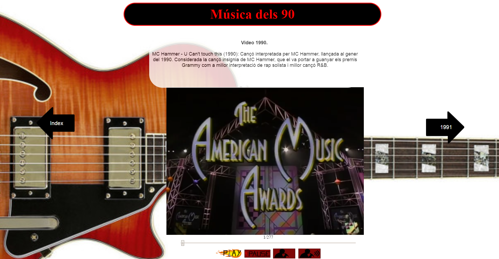

Reproductor Propio

Este trabajo consistia en realizar un reproductor de video propio con nuestros propios botones y herramientas y ponerlo en una página web de mi invención, en mi caso fue una sencilla página web que tiene una canción mitica de cada año de la decada de los 90. El esquema de la página y los botons es el que se puede ver en la foto